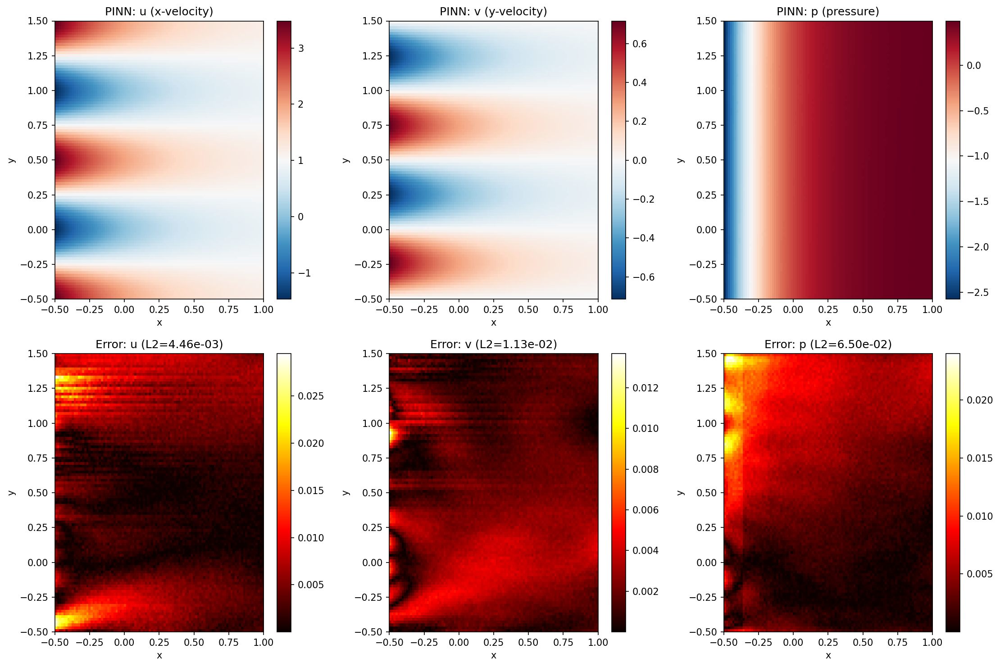

Navier-Stokes PINN: Kovasznay Flow¶
| Metadata | Value |
|---|---|
| Level | Advanced |
| Runtime | ~8 min (GPU) / ~30 min (CPU) |
| Prerequisites | JAX, Flax NNX, fluid mechanics |
| Format | Python + Jupyter |
| Memory | ~1 GB RAM |
Overview¶
This tutorial demonstrates solving the 2D steady incompressible Navier-Stokes equations using a Physics-Informed Neural Network (PINN). The Kovasznay flow is an exact analytical solution to Navier-Stokes, making it an ideal benchmark for validating numerical methods.
The Navier-Stokes equations describe the motion of viscous fluids and are fundamental to computational fluid dynamics. PINNs can solve these equations without mesh generation or explicit discretization, learning the velocity and pressure fields directly from the governing physics.
What You'll Learn¶
- Implement a PINN for coupled multi-output PDEs (u, v, p)
- Compute mixed derivatives using JAX Jacobian and Hessian
- Enforce continuity and momentum equations simultaneously
- Validate against analytical Kovasznay flow solution
- Visualize velocity vector fields and pressure distributions
Coming from DeepXDE?¶
If you are familiar with the DeepXDE library:
| DeepXDE | Opifex (JAX) |
|---|---|
dde.geometry.Rectangle(xmin, xmax) |
jax.random.uniform(key, (N, 2)) for (x, y) |
dde.grad.jacobian(u, x, i=0, j=0) |
jax.jacobian(uvp_fn)(xy)[0, 0] for u_x |
dde.grad.hessian(u, x, component=0, i=0) |
jax.hessian(u_fn)(xy)[0, 0] for u_xx |
dde.nn.FNN([2]+[50]*4+[3], "tanh") |
Custom NavierStokesPINN with nnx.Linear |
model.compile("adam", lr=1e-3) |
nnx.Optimizer(pinn, optax.adam(lr), wrt=nnx.Param) |
model.train(iterations=30000) |
Custom training loop with @nnx.jit |
Key differences:
- Multi-output: Network outputs [u, v, p] as a single 3-channel tensor
- Jacobian-based: Use
jax.jacobianfor efficient first derivatives of all outputs - Coupled PDEs: Momentum and continuity equations share the network output
- No L-BFGS: This example uses Adam only; add L-BFGS for better convergence
Files¶
- Python Script:
examples/pinns/navier_stokes.py - Jupyter Notebook:
examples/pinns/navier_stokes.ipynb
Quick Start¶
Run the Python Script¶
Run the Jupyter Notebook¶
Core Concepts¶
Navier-Stokes Equations¶
The 2D steady incompressible Navier-Stokes equations consist of momentum and continuity:
Momentum (x-direction): $\(u \frac{\partial u}{\partial x} + v \frac{\partial u}{\partial y} = -\frac{\partial p}{\partial x} + \frac{1}{Re}\left(\frac{\partial^2 u}{\partial x^2} + \frac{\partial^2 u}{\partial y^2}\right)\)$
Momentum (y-direction): $\(u \frac{\partial v}{\partial x} + v \frac{\partial v}{\partial y} = -\frac{\partial p}{\partial y} + \frac{1}{Re}\left(\frac{\partial^2 v}{\partial x^2} + \frac{\partial^2 v}{\partial y^2}\right)\)$
Continuity: $\(\frac{\partial u}{\partial x} + \frac{\partial v}{\partial y} = 0\)$
Kovasznay Flow¶
The Kovasznay flow is an exact solution with Re = 20:
| Component | Formula |
|---|---|
| x-velocity | \(u = 1 - e^{\lambda x} \cos(2\pi y)\) |
| y-velocity | \(v = \frac{\lambda}{2\pi} e^{\lambda x} \sin(2\pi y)\) |
| Pressure | \(p = \frac{1}{2}(1 - e^{2\lambda x})\) |
| Lambda | \(\lambda = \frac{1}{2\nu} - \sqrt{\frac{1}{4\nu^2} + 4\pi^2}\) |
Where \(\nu = 1/Re = 0.05\) is the kinematic viscosity.
PINN Architecture¶
graph TB
subgraph Input["Collocation Points"]
A["Domain Points<br/>(x, y) in Ω"]
B["Boundary Points<br/>(x, y) on ∂Ω"]
end
subgraph PINN["Neural Network (x, y) → [u, v, p]"]
C["Linear + tanh<br/>50 units"]
D["Linear + tanh<br/>50 units"]
E["Linear + tanh<br/>50 units"]
F["Linear + tanh<br/>50 units"]
G["Linear<br/>3 units"]
end
subgraph Loss["Physics-Informed Loss"]
H["Momentum-x<br/>|u·u_x + v·u_y + p_x - ν∇²u|²"]
I["Momentum-y<br/>|u·v_x + v·v_y + p_y - ν∇²v|²"]
J["Continuity<br/>|u_x + v_y|²"]
K["BC Loss<br/>|u - u_exact|² + |v - v_exact|² + |p - p_exact|²"]
L["Total Loss"]
end
A --> C --> D --> E --> F --> G
B --> C
G --> H
G --> I
G --> J
G --> K
H --> L
I --> L
J --> L
K --> L
style H fill:#e3f2fd,stroke:#1976d2
style I fill:#e8f5e9,stroke:#388e3c
style J fill:#fff3e0,stroke:#f57c00
style K fill:#fce4ec,stroke:#c2185b
style L fill:#f3e5f5,stroke:#7b1fa2Implementation¶
Step 1: Imports and Configuration¶
Terminal Output:
======================================================================
Opifex Example: Navier-Stokes PINN (Kovasznay Flow)
======================================================================
JAX backend: gpu
JAX devices: [CudaDevice(id=0)]
Reynolds number: Re = 20
Domain: x in [-0.5, 1.0], y in [-0.5, 1.5]
Collocation: 2601 domain, 400 boundary
Network: [2] + [50, 50, 50, 50] + [3]
Training: 30000 epochs @ lr=0.001
Step 2: Define Analytical Solution¶
RE = 20
NU = 1.0 / RE
LAMBDA = 1.0 / (2.0 * NU) - jnp.sqrt(1.0 / (4.0 * NU**2) + 4.0 * jnp.pi**2)
def u_exact(xy):
x, y = xy[:, 0], xy[:, 1]
return 1.0 - jnp.exp(LAMBDA * x) * jnp.cos(2.0 * jnp.pi * y)
def v_exact(xy):
x, y = xy[:, 0], xy[:, 1]
return LAMBDA / (2.0 * jnp.pi) * jnp.exp(LAMBDA * x) * jnp.sin(2.0 * jnp.pi * y)
def p_exact(xy):
x = xy[:, 0]
return 0.5 * (1.0 - jnp.exp(2.0 * LAMBDA * x))
Terminal Output:
Kovasznay Flow: Steady 2D incompressible Navier-Stokes
Lambda = -1.810099
u(x,y) = 1 - exp(lambda*x) * cos(2*pi*y)
v(x,y) = (lambda/2*pi) * exp(lambda*x) * sin(2*pi*y)
p(x,y) = 0.5 * (1 - exp(2*lambda*x))
Step 3: Create the PINN¶
class NavierStokesPINN(nnx.Module):
def __init__(self, hidden_dims: list[int], *, rngs: nnx.Rngs):
layers = []
in_features = 2 # (x, y)
for hidden_dim in hidden_dims:
layers.append(nnx.Linear(in_features, hidden_dim, rngs=rngs))
in_features = hidden_dim
layers.append(nnx.Linear(in_features, 3, rngs=rngs)) # [u, v, p]
self.layers = nnx.List(layers)
def __call__(self, xy):
h = xy
for layer in self.layers[:-1]:
h = jnp.tanh(layer(h))
return self.layers[-1](h)
pinn = NavierStokesPINN(hidden_dims=[50, 50, 50, 50], rngs=nnx.Rngs(42))
Terminal Output:
Step 4: Compute PDE Residuals¶
def compute_pde_residuals(pinn, xy):
def uvp_scalar(xy_single):
return pinn(xy_single.reshape(1, 2)).squeeze()
def residuals_single(xy_single):
uvp = uvp_scalar(xy_single)
u, v = uvp[0], uvp[1]
# First derivatives via Jacobian
jac = jax.jacobian(uvp_scalar)(xy_single)
u_x, u_y = jac[0, 0], jac[0, 1]
v_x, v_y = jac[1, 0], jac[1, 1]
p_x, p_y = jac[2, 0], jac[2, 1]
# Second derivatives (Hessian diagonals)
hess_u = jax.hessian(lambda xy: uvp_scalar(xy)[0])(xy_single)
hess_v = jax.hessian(lambda xy: uvp_scalar(xy)[1])(xy_single)
u_xx, u_yy = hess_u[0, 0], hess_u[1, 1]
v_xx, v_yy = hess_v[0, 0], hess_v[1, 1]
# Momentum equations
momentum_x = u * u_x + v * u_y + p_x - (1/RE) * (u_xx + u_yy)
momentum_y = u * v_x + v * v_y + p_y - (1/RE) * (v_xx + v_yy)
# Continuity
continuity = u_x + v_y
return jnp.array([momentum_x, momentum_y, continuity])
return jax.vmap(residuals_single)(xy)
Step 5: Training¶
Terminal Output:
Training PINN...
Epoch 1/30000: loss=5.135920e+00
Epoch 5000/30000: loss=1.756912e-03
Epoch 10000/30000: loss=4.721234e-04
Epoch 15000/30000: loss=1.124221e-03
Epoch 20000/30000: loss=2.046824e-03
Epoch 25000/30000: loss=1.094199e-03
Epoch 30000/30000: loss=7.266006e-04
Final loss: 7.266006e-04
Step 6: Evaluation¶
Terminal Output:
Evaluating PINN...
L2 relative error (u): 4.457689e-03
L2 relative error (v): 1.126896e-02
L2 relative error (p): 6.496343e-02
Mean PDE residual: 8.192191e-03
Visualization¶
Solution Fields and Errors¶

Training and Cross-Sections¶

Results Summary¶
| Metric | Value |
|---|---|
| Final Loss | 7.27e-04 |
| L2 Error (u) | 0.45% |
| L2 Error (v) | 1.13% |
| L2 Error (p) | 6.50% |
| Mean PDE Residual | 8.19e-03 |
| Parameters | 7,953 |
| Training Epochs | 30,000 |
Next Steps¶
Experiments to Try¶
- Add L-BFGS: Use
optax.lbfgsfor second-order refinement - Higher Re: Try Re = 100 or 400 for more challenging flows
- More epochs: Train for 50,000+ epochs for better pressure accuracy
- Deeper network: Try
hidden_dims=[100, 100, 100, 100, 100] - Loss weighting: Balance momentum vs continuity losses
Related Examples¶
| Example | Level | What You'll Learn |
|---|---|---|
| Poisson Equation | Intermediate | Simpler elliptic PDE |
| Burgers Equation | Intermediate | Nonlinear convection |
| FNO on Darcy Flow | Intermediate | Data-driven alternative |
| PINO on Burgers | Advanced | Hybrid approach |
API Reference¶
nnx.Linear- Linear layernnx.Optimizer- Optimizer wrapperjax.jacobian- Jacobian computationjax.hessian- Hessian computation
Troubleshooting¶
Pressure error much higher than velocity¶
Symptom: L2 error in p is 5-10x higher than u, v errors.
Cause: Pressure is determined only indirectly through momentum gradients.
Solution: Add pressure reference point constraint or increase BC weighting:
# Fix pressure at a point (e.g., outflow corner)
def pressure_reference_loss(pinn):
ref_point = jnp.array([[X_MAX, Y_MIN]])
p_pred = pinn(ref_point)[0, 2]
p_exact_val = p_exact(ref_point)[0]
return (p_pred - p_exact_val) ** 2
Loss oscillates without converging¶
Symptom: Loss fluctuates around a value without steady decrease.
Cause: Adam stuck in saddle point or local minimum.
Solution: Add learning rate scheduling or use L-BFGS refinement:
# Learning rate schedule
schedule = optax.exponential_decay(
init_value=1e-3,
transition_steps=10000,
decay_rate=0.5
)
opt = nnx.Optimizer(pinn, optax.adam(schedule), wrt=nnx.Param)
Continuity not satisfied¶
Symptom: Large continuity residual even with small momentum residual.
Cause: Network not enforcing divergence-free constraint.
Solution: Increase continuity loss weight or use stream function formulation:
# Higher weight for continuity
def total_loss(pinn, xy_dom, xy_bc, u_bc, v_bc, p_bc):
mom_x, mom_y, cont = compute_pde_residuals(pinn, xy_dom)
loss_pde = jnp.mean(mom_x**2) + jnp.mean(mom_y**2) + 10.0 * jnp.mean(cont**2)
# ... boundary loss
return loss_pde + loss_bc
Slow training¶
Symptom: Each epoch takes >1 second on GPU.
Cause: Hessian computation is expensive for multi-output networks.
Solution: Enable gradient checkpointing via TrainingConfig, or split Hessian computation: